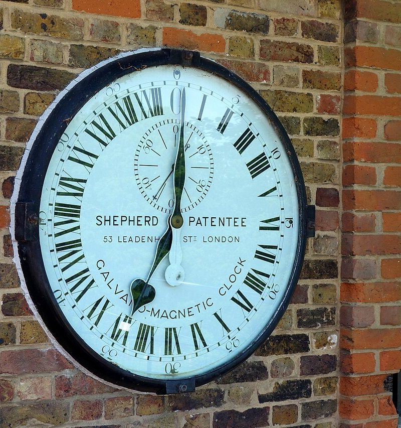

On page 1.2 we placed a star in the observer's sky with $H = \theta - \alpha$, where $\theta$ is the angle the sky has turned since the vernal point γ crossed the meridian. We had to set $\theta$ by hand. To predict anything, we need to read it from a clock and a calendar instead.
Once we know $\theta$ at any moment, we can predict when a star crosses the meridian at any place, and how long the Sun stays above the horizon on any date and at any latitude.
1 · ObservationThe day of the stars and the day of the Sun
If you time a star crossing the meridian on two nights, with a clock that keeps ordinary time, you'll find that it comes back after 23 h 56 min 4 s. So each night it crosses about four minutes earlier than the night before, almost two hours earlier over a month.
This is why the stars we see at a given hour change with the seasons. From Rome, Betelgeuse in Orion crosses the meridian at midnight around 20 December, at 22:00 around 19 January, and at 20:00 around 18 February, all in local mean time, the clock time of Rome's own meridian.
The interval from one noon to the next, the true solar day, is less regular than the day of the stars. In 2026 it varied from 21 s short of 24 hours in September to 30 s over in December, yet its average over the year was 24 hours to within a tenth of a second, because our clocks are defined that way.
Ptolemy puts both facts into one definition. The sky's turn, "the return of a given point on the equator" to the meridian, takes 360 time-degrees, while a mean solar day takes "360 time-degrees of one revolution of the equator plus approximately $0^\circ 59'$ time-degrees, which is the amount of the mean motion of the sun during that period" (Almagest III 9).
A time-degree is the time the equator takes to turn $1^\circ$ across the meridian, $\tfrac{1}{15}$ of an hour or 4 minutes (Toomer's introduction). Ptolemy's $0^\circ 59'$ ($0.983^\circ$) is therefore 3.93 minutes, the difference we found between the day of the stars and the day of the Sun.
Over a year those four minutes a day add up to one whole turn of the sky, and Copernicus counts the difference that way: "in the course of an entire year 365 rotations take place. These are increased by approximately a whole additional rotation as the result of a daily prolongation due to the apparent advance of the sun" (De Revolutionibus III 26 [f. 96v]). Figure 1 shows the extra turn building up through 2026.
In the figure
- view
- from outside the sphere, above P, down to declination $-60^\circ$ at the rim
- blue
- the celestial equator
- dashed
- the ecliptic, centred on its own pole K, so it appears off-centre
Read-out
- elapsed, turns
- counted from 1 January 2026, 0 h UT; the Sun's turns are its meridian crossings
2 · ModelSidereal time and mean solar time
The sidereal day and the solar day
We keep the turning sky of page 1.1, in which the stars turn about P at a constant rate, and call the time of one turn a sidereal day. The Sun shares that turn, but it also moves east along the ecliptic, about $1^\circ$ a day against the stars, so it comes back to the meridian a little later than they do.
To see how much later, let the Sun's right ascension grow uniformly, by $n$ degrees a day. Its hour angle is $H_\odot = \theta - \alpha_\odot$, like that of any other point, so if the sky turns at the rate $\omega$, the two angles grow at the rates
$$\frac{d\theta}{dt} = \omega, \qquad \frac{dH_\odot}{dt} = \omega - n.$$A solar day, from one meridian crossing of the Sun to the next, is the time in which $H_\odot$ grows by $360^\circ$, and a sidereal day is the time in which $\theta$ does. Over a year of $Y$ solar days the Sun goes once round the sky ($nY = 360^\circ$). In that time $H_\odot$ grows by $360^\circ\,Y$, and $\theta$, which gains $n$ on it every day, grows by one turn more, $360^\circ\,(Y + 1)$:
With the tropical year of 365.24219 days, a year holds 366.24219 sidereal days, and one sidereal day lasts 23 h 56 min 4 s, the turn we timed in section 1.
Sidereal time and the hour angle
A clock that keeps pace with the stars reads the angle $\theta$ directly, and its reading is called the local sidereal time. It is usually given in hours, $15^\circ$ to the hour, so it reads $0^\text{h}$ when γ crosses the meridian and runs through $24^\text{h}$ in one sidereal day.
A star crosses the meridian when its hour angle $H = \theta - \alpha$ is zero, that is, when the sidereal time equals its right ascension. So at any moment the stars on the meridian are those whose right ascension is the current sidereal time, and this is why right ascension is counted in hours, like the sidereal time.
Each place has its own meridian, and so its own sidereal time. For an observer at geographic longitude $\ell$ east of Greenwich, the meridian lies $\ell$ further east among the stars than the meridian of Greenwich. Since the right ascension on a meridian is its sidereal time, $\theta$ exceeds the sidereal time at Greenwich, $\theta_G$, by $\ell$:
$$\theta = \theta_G + \ell, \qquad H = \theta_G + \ell - \alpha.$$Longitudes on this site are positive east. Meeus counts them positive west, and Fitzpatrick writes $\varphi$ for the longitude (and $L$ for the latitude). Their formulas have $-\ell$ where ours have $+\ell$.
Mean solar time and Universal Time
The clocks we live by follow the Sun, but the real Sun is a poor timekeeper, since its days are uneven, as we saw in section 1, so astronomers defined a fictitious mean Sun that moves along the equator at a constant rate. Its right ascension is the Sun's mean longitude $\bar\lambda$, which grows by $n$ every day:
Here $d$ is the time in days of UT since the epoch J2000.0, 1 January 2000 at 12:00 UT, and $L_0$ is the mean Sun's right ascension at that epoch. Both constants have been fixed by convention since 1984 (Meeus, ch. 12): $L_0 = 280.46061837^\circ$ and $n = 0.98564736629^\circ$ a day.
The mean solar time at a place is the hour angle of the mean Sun plus 12 hours, so that the day starts at midnight. At Greenwich it is called Universal Time, UT, and anywhere else the local mean time is $\text{UT} + \ell / 15^\circ$ hours. At Rome ($\ell = 12.50^\circ$) that is UT + 50 min.
Civil clocks keep the mean time of a reference meridian instead. Central European Time, for instance, is UT + 1 h, so at Rome local mean noon comes at about 12:10 CET.


The sidereal time from the clock
A clock gives the hour angle of the mean Sun, and what we want is the hour angle of γ, the sidereal time. Getting from one to the other takes a few short steps. To make sure each one is right, we'll follow a single moment through all of them: 20 April 2026, 20:00 UT, at Greenwich.
Step 1: the sidereal time is the hour angle of the mean Sun plus its right ascension. The relation $H = \theta - \alpha$ holds for every point of the sky, the mean Sun included, so at Greenwich $H_m = \theta_G - \alpha_m$, or
$$\theta_G = H_m + \alpha_m.$$Figure 2 draws the three angles on the equator. Going westward from the meridian, we reach the mean Sun after $H_m$, and γ after a further $\alpha_m$, because right ascension is counted eastward from γ to the mean Sun.
In the figure
- $H_m$, $\theta_G$
- counted westward from the meridian (clockwise in this view)
- $\alpha_m$
- counted eastward from γ
Step 2: the clock gives $H_m$. Mean solar time is defined so that the mean Sun crosses the meridian of Greenwich at 12:00 UT, and its hour angle then grows by $15^\circ$ for every hour of UT:
$$H_m = 15^\circ\,(\text{UT} - 12\,\text{h}).$$At 20:00 UT, $H_m = 15^\circ \times 8 = 120^\circ$.
Step 3: the date gives $\alpha_m$. On 20 April 2026 at 20:00 UT, $d = 9606.3333$ days, and with the conventional $L_0$ and $n$, $\alpha_m = L_0 + n\,d = 28.92^\circ$ (modulo $360^\circ$). Adding the two angles gives $\theta_G = 120^\circ + 28.92^\circ = 148.92^\circ$.
Step 4: $H_m$ in terms of $d$. Steps 2 and 3 use two variables, the time of day and the date, and we'd like a single formula in $d$. Because $d$ is counted from a noon, its whole part $N$ is the number of noons since the epoch, and its fractional part is the time since the last noon:
$$d = N + \frac{\text{UT} - 12\,\text{h}}{24\,\text{h}}, \qquad 360^\circ\,d = 360^\circ N + 15^\circ\,(\text{UT} - 12\,\text{h}) = 360^\circ N + H_m.$$Whole turns don't change a direction, so we can replace $H_m$ by $360^\circ\,d$. On 20 April, $360^\circ \times 9606.3333$ is 9606 whole turns plus $120^\circ$, which is indeed $H_m$. Putting the four steps together,
$$\theta_G = 360^\circ\,d + L_0 + n\,d = L_0 + (360^\circ + n)\,d.$$The rate $360^\circ + n$ is the $\omega$ we met at the start of this section. In one day of UT the sky turns $360^\circ$ relative to the mean Sun, since that is what a solar day is, and in the same day the mean Sun moves $n$ further east of γ. Relative to γ, then, the sky turns $360^\circ + n$.
With the conventional values of $L_0$ and $n$, this becomes the formula we'll use from now on:
The rate contains the length of the year, since $360^\circ / n = 365.24219$ days, the tropical year. Meeus adds two more terms, in $T^2$ and $T^3$, but in 2026 they are worth only 6 ms, so we leave them out.
Tables of the Sun give a slightly larger mean longitude at J2000.0, $280.46646^\circ$ (Meeus 25.2), 21″ more than $L_0$, because they give the Sun's geometric position. The mean Sun of the clock follows the Sun as we see it, which lags to the west by the arc the Sun moves while its light reaches the Earth, about 8 minutes (the aberration of light). This lag accounts for all but half an arcsecond of the difference, and the rest comes from the two fits.
In time, 21″ is only 1.4 s, too small to matter on this page. We use $L_0$ in the clock formula, and the Sun's mean longitude for the model Sun that sets the length of the day.
We can now check the angle we set by hand on page 1.2, where Aldebaran stood in the sky of Rome on 1 January 2026 at 19:00 UT with $\theta = 38.94^\circ$. At that moment the formula gives $\theta_G = 26.44^\circ$, and adding Rome's $\ell = 12.50^\circ$ gives the same $\theta = 38.94^\circ$ ($2^\text{h}35^\text{m}45^\text{s}$). Figure 3 starts from that moment.
In the figure
- dotted
- the meridian, through N, Z and S
- blue
- the celestial equator, which crosses the meridian at M
- dashed
- the star's hour circle, from P to the equator
- θ, H, α
- θ and H counted west from M, α east from γ
The Julian Date
To use the formula we need $d$, the number of days between two dates, and calendars make that awkward. Months have unequal lengths, some years have a leap day, and at the Gregorian reform 4 October 1582 was followed directly by 15 October. Astronomers therefore count days continuously.
The Julian Date JD counts the days since noon UT on 1 January 4713 BC in the Julian calendar, with the time of day as a fraction. J2000.0 is JD 2451545.0, and 1 January 2026 at 0 h UT is JD 2461041.5. In this count the two days of the Gregorian reform, 4 and 15 October 1582, follow each other as JD 2299159.5 and 2299160.5.
A Julian Date starts at noon, as Ptolemy's astronomical day did. He counted the day from the Sun's meridian crossing because sunrise comes at different times at different latitudes, while the meridian behaves "the same at every place on earth" (Almagest III 9), and he put all his epochs at noon (III 7).
Noon was not an obvious choice. In ordinary life the day began at sunrise for the Babylonians, at sunset for the Athenians and at midnight for the Romans, as Copernicus recalls (De Revolutionibus III 26).
To convert a calendar date (year $Y$, month $M$, day $D$ with its fraction) into a Julian Date, Meeus (ch. 7) gives
$$\text{JD} = \lfloor 365.25\,(Y + 4716) \rfloor + \lfloor 30.6001\,(M + 1) \rfloor + D + B - 1524.5,$$with January and February counted as months 13 and 14 of the previous year, and $B = 2 - \lfloor Y/100 \rfloor + \lfloor Y/400 \rfloor$ (Gregorian calendar) or $B = 0$ (Julian calendar).
Where the terms come from
Starting the year in March puts the leap day at the end of the year, so the number of days before a given month doesn't depend on whether the year is a leap year. From March on, the months have 31, 30, 31, 30, 31 days, a pattern that repeats with an average of 30.6 days, and $\lfloor 30.6001\,(M + 1) \rfloor$ counts them. The extra 0.0001 guards against rounding errors.
The term $\lfloor 365.25\,(Y + 4716) \rfloor$ counts the days of the past years with a leap day every four years, as in the Julian calendar, and the shift by 4716 years keeps its argument positive for every date after 4713 BC. $B$ removes the three leap days that the Gregorian calendar skips every four centuries, and $-1524.5$ sets the origin.
Ptolemy needed a continuous count too, to compare observations made centuries apart. He dated events in Egyptian years of exactly 365 days, counted from the first year of King Nabonassar, whose reign began the Babylonian records he used (Almagest III 7; Toomer's introduction).
We can check his count against ours. From Nabonassar 1, Thoth 1, noon, to an autumn equinox he observed in the 17th year of Hadrian, Athyr 7, two hours after noon, he counts "879 Egyptian years 66 days and 2 equinoctial hours" (III 7). In our calendar these moments are 26 February 747 BC and 25 September AD 132, JD 1448638.0 and 1769539.0833. They are 320901.0833 days apart, exactly $879 \times 365 + 66 + \tfrac{2}{24}$.
When a star crosses the meridian
Now that we know the sidereal time at any moment, we can predict when a star crosses the meridian, that is, when $\theta = \alpha$. At 0 h UT on the date the Greenwich sidereal time is $\theta_{G,0}$, so the sky still has to turn by $(\alpha - \ell - \theta_{G,0})$, reduced to $[0^\circ, 360^\circ)$, and it turns at $360.98564736629^\circ$ a day:
$$\text{UT of transit} = \frac{(\alpha - \ell - \theta_{G,0}) \bmod 360^\circ}{360.98564736629^\circ} \times 24\ \text{h}.$$The next transit comes one sidereal day later, usually on the next date. Because the sidereal day is shorter than 24 hours, though, once a year the next transit still falls within the same date, and on that date the star crosses the meridian twice.
Figure 4 plots the transits through a whole year as a star calendar, together with the hours of night. Each night the transit comes about four minutes earlier, and after a year the star is back at the same hour.
In the figure
- grey band
- night, with the model Sun's centre more than 50′ below the horizon
- red band
- the hours when the star is above the horizon
- line
- the star's transit
The length of the day
Now that we can read the sky's angle from a clock, we can predict when the Sun rises and sets. For that we need its declination, and we'll start with the simplest Sun there is: one that moves along the ecliptic at a constant rate, so that its longitude is always the mean longitude, $\lambda = \bar\lambda$. Its declination then follows from the conversion formula of page 1.2:
$$\sin\delta_\odot = \sin\varepsilon \sin\bar\lambda.$$This Sun crosses the meridian at mean noon, 12:00 local mean time, and its hour angle grows by $15^\circ$ an hour. It sets at the hour angle $H_0$ we found on page 1.1, generalised to a horizon at altitude $h_0$:
$$\cos H_0 = \frac{\sin h_0 - \sin\varphi \sin\delta_\odot}{\cos\varphi \cos\delta_\odot}, \qquad \text{day} = \frac{2H_0}{15^\circ}\ \text{h}, \qquad \text{sunrise, sunset} = 12\,\text{h} \mp \frac{H_0}{15^\circ}.$$Sunrise and sunset are timed when the top edge of the Sun touches the horizon. At that moment its centre is 50′ below the true horizon, 34′ for refraction and 16′ for the Sun's radius, as we found in the third exercise of page 1.1, so $h_0 = -50'$.
At the equator those 50′ add 7 minutes to the day, which lasts 12 h 07 min all year, and Ptolemy's longest day at Rhodes, $14\tfrac12$ hours with the geometric horizon of page 1.1, becomes 14 h 39 min. The table gives the day at three other latitudes.
| Place | March equinox | June solstice | December solstice |
|---|---|---|---|
| Alexandria ($31.2^\circ$) | 12 h 04 min | 14 h 11 min | 10 h 07 min |
| Rome ($41.9^\circ$) | 12 h 03 min | 15 h 14 min | 9 h 07 min |
| London ($51.5^\circ$) | 12 h 03 min | 16 h 38 min | 7 h 50 min |
Near the poles the Sun stops setting. Its lowest point stays above $h_0$ when $\varphi > 90^\circ - \delta_\odot + h_0$, and since $\delta_\odot$ reaches $\varepsilon$, somewhere in the year there is a midnight Sun north of $65.7^\circ$ and a polar night north of $67.4^\circ$. At Tromsø, north of both limits, this Sun stays up for 66 days in 2026 and down for 50.
(a) the day through 2026 at latitude φ
(b) every latitude
In panel (b)
- gold band
- polar day, when the Sun does not set
- grey band
- polar night, when the Sun does not rise
3 · FitThe year, the epoch and the longitude
The clock formula of section 2 depends on three numbers. The daily motion $n$ of the mean Sun sets the rate $360^\circ + n$, the constant $L_0$ ties the sidereal clock to the solar clock at one moment, and the longitude $\ell$ places the observer.
The rate, from the length of the year
Since $n = 360^\circ / Y$, the rate follows from the length of the year, measured from one equinox to the next. Hipparchus and Ptolemy found $Y = 365;14,48$ days (365.24667 days, Almagest III 1), 6.4 minutes longer than the modern 365.24219 days.
From it Ptolemy derives the Sun's mean motion, $0^\circ 59' 08.29''$ (0.985635°) a day, the "$0^\circ 59'$" of his definition in section 1. With his year the sidereal day comes out as 23 h 56 min 04.093 s, only 2.9 ms longer than the modern 23 h 56 min 04.091 s. An error of 6 minutes in the year does so little because $P_\text{sid} = 24\,\text{h} \times Y/(Y+1)$ hardly depends on $Y$: an error $\Delta Y$ changes it by $\Delta Y \times 24\,\text{h}/(Y+1)^2$.
The same error matters more for the Sun's position, because there it accumulates. Ptolemy's mean Sun falls behind the modern one by $0.44^\circ$ a century, an error that pages 2.1 and 2.3 take up again.
The constant, from the Sun
The constant $L_0$ is the mean Sun's right ascension at the epoch, which is also its mean longitude. It is found from timed equinoxes, as page 1.2 found the vernal point, and page 2.1 shows how. Here we use the conventional value of section 2, $L_0 = 280.46061837^\circ$.
The longitude, from a timed transit
Once $n$ and $L_0$ are known, one timed transit gives the observer's longitude, because at the transit $\theta = \alpha$, so $\ell = \alpha - \theta_G$. Vega, for example, at right ascension $279.4601^\circ$ in 2026, crossed the meridian of Rome on 15 August 2026 at 20:10:52 UT, timed to the second.
At that moment the formula gives $\theta_G = 266.9626^\circ$, so $\ell = 12.4975^\circ$, against the true 12.4964°. How close we get depends only on the timing, since one second of time is 15″ of longitude, 345 m on the parallel of Rome.
4 · TestThe clock against the sky
The stars
The reference sky computes the sidereal time with the full Meeus formula and adds nutation, the small back-and-forth shift of the equinox met on page 1.2. Through 2026 the sidereal time of section 2 differs from it by at most 0.66 s, so the transits we predict for the stars are right to within a second.
The Sun
To see how good the uniform Sun is, Figure 6 compares its noon, sunrise and sunset with those of the reference Sun through 2026. The reference Sun's noon is its real meridian crossing, and its sunrise and sunset use the same $h_0 = -50'$ as the uniform Sun's, so the figure measures only the error in the Sun's motion.
In the figure
- noon
- model minus real time of noon, positive when the model is late
- sunrise
- the same for sunrise
- sunset
- the same for sunset
Read-out
- day
- model minus real length of the day
The uniform Sun's noon is wrong by up to a quarter of an hour. At every latitude the real Sun crosses the meridian 14 minutes after mean noon on 11 February, and 16½ minutes before it on 3 November.
The length of the day comes out better, but its error grows with the latitude. The model Sun's day is too short by up to 5 minutes at Rome, 7½ at London and 13 at $65^\circ$. In the northern hemisphere it is almost never too long, and then by less than a minute, while in the southern hemisphere the signs are reversed.
The day comes out too short because the model Sun moves uniformly. On 5 April 2026, for instance, the real Sun is almost $2^\circ$ ahead of the mean Sun. Its declination is therefore $6.19^\circ$ instead of the uniform Sun's $5.45^\circ$, and in London its day lasts 13 h 13 min instead of 13 h 06 min.
5 · ResidualWhat the clock leaves out
Both errors of Figure 6 come from the model Sun, whose longitude grows by the same angle every day. The real Sun runs up to about $2^\circ$ ahead of it in spring and behind it in autumn. Page 2.1 measures this inequality and builds the first model of it.
The error at noon has a second cause, which would remain even for a Sun moving uniformly along the ecliptic. Because the ecliptic is tilted to the equator, such a Sun would still not move uniformly in right ascension, as the lag of $\alpha$ behind $\lambda$ in the table of page 1.2 showed. Page 2.2 combines the two effects into the equation of time.
Universal Time is itself not uniform, because it follows the rotation of the Earth, and the Earth does not turn at a constant rate. The uniform time used by the ephemeris, Terrestrial Time (TT), is kept by atomic clocks, and the two differ by $\Delta T = \text{TT} - \text{UT}$, about 69 s today, because the tides slowly lengthen the day.
The atomic second was chosen to match the length of the day around 1820, so $\Delta T$ is the sum, day after day since then, of each day's difference from 86 400 s. The friction of the tides raised by the Moon lengthens the day by about 1.75 ms a century.
In AD 132, then, a day was only about 30 ms shorter than 86 400 s, so the Earth turned at almost exactly today's rate. Between 132 and 1820, though, a shortfall of about 15 ms a day on average, accumulated over more than 600 000 days, adds up to about 2 h 32 min.
Since both the daily shortfall and the number of days grow with the time elapsed, $\Delta T$ grows as its square, from about a minute today to hours in antiquity. The formula for $\Delta T$ used here, Espenak and Meeus' polynomials fitted to ancient eclipse records, gives 2 h 35 min for Ptolemy's time, close to this estimate.
In 2 h 35 min the sky turns almost $39^\circ$, so before we compare a time recorded by Ptolemy with the reference sky, we must correct it by $\Delta T$. We'll need this on page 3.3, for ancient eclipses.
Finally, the right ascensions of the stars change. Since 2000, Vega's has grown by 53 s of time and Sirius's by 69 s, so transit times computed from an old catalogue drift by two to three seconds a year. Page 2.3 explains why.
Exercises
Show that a year of $Y$ solar days contains $Y + 1$ sidereal days, and find the sidereal day for $Y = 365.24219$ days. Repeat with Ptolemy's daily motion of the Sun, $0^\circ 59' 08.29''$ (0.985635°). Then apply the same argument to the Moon, which goes round the sky relative to the Sun in a synodic month of 29.530589 days: how much later does it cross the meridian each day?
Write the hour angle of the body as $\theta - \alpha$ and compare the rates. For the Moon, compare its day with the Sun's: relative to the Sun it goes once round in a synodic month.
With $H_\odot = \theta - \alpha_\odot$, the Sun's hour angle grows at $\omega - n$. In a year the Sun goes once round the sky, so $H_\odot$ grows by $360^\circ$ fewer than $\theta$: $Y$ solar days are $Y + 1$ turns of the sky, 366.24219 sidereal days. One sidereal day is $24\ \text{h} \times Y/(Y+1)$ = 23 h 56 min 04.091 s.
In Ptolemy's terms a mean solar day is $360^\circ + 0.985635^\circ$ of the sky's turn, so one turn takes $360 / 360.985635$ of a day: 23 h 56 min 04.093 s.
The Moon moves east relative to the Sun by one turn in 29.530589 days, so its hour angle falls behind the Sun's by $360^\circ / 29.530589$ a day. Its day lasts $1/(1 - 1/29.530589) = 1.035050$ days, 24 h 50 min 28 s: it crosses the meridian about 50.5 minutes later each day.
At what time does Sirius cross the meridian of Rome ($\ell = 12.4964^\circ$, $\varphi = 41.9^\circ$) on New Year's Eve, 31 December 2026? Its position of date is $\alpha = 101.5845^\circ$, $\delta = -16.755^\circ$. Give the answer in UT and in Central European Time (UT + 1 h), and the star's altitude. Check in Figure 4, then repeat for your own longitude.
First find $\theta_{G,0}$ at 0 h UT from $d$ = JD − 2451545.0, then use the transit formula of section 2.
On 31 December 2026 at 0 h UT, JD = 2461405.5 and $d = 9860.5$, so $\theta_{G,0} = 99.4365^\circ$ ($6^\text{h}37^\text{m}44.75^\text{s}$).
The sky still has to turn $(101.5845^\circ - 12.4964^\circ - 99.4365^\circ) \bmod 360^\circ = 349.6516^\circ$. At $360.9856^\circ$ a day that takes 23.24646 h: the transit is at 23:14:47 UT, which is 00:14:47 CET on 1 January, a quarter of an hour into the new year, and 00:04:46 local mean time.
The altitude is $90^\circ - |41.9^\circ + 16.755^\circ| = 31.3^\circ$. Sirius thus crosses at about local mean midnight on the night of 1 January. On 20 December it crosses Rome's meridian twice within the same UT date, the double transit that section 2 says happens once a year.
The model puts the earliest sunset and the latest sunrise of the winter on the shortest day, the solstice: at Rome, 07:36:18 and 16:43:44 CET on 21 December 2026. In the real sky the earliest sunset is on 8 December (16:38:44 CET) and the latest sunrise on 4 January 2027 (07:37:53 CET). Explain the difference with Figure 6.
Near the solstice the length of the day hardly changes. Compare it with the motion of noon in Figure 6.
Sunrise and sunset sit symmetrically about noon. Near the solstice the length of the day changes by only a few seconds a day (9 h 13 min 54 s on 8 December, 9 h 07 min 37 s on 21 December, 9 h 14 min 06 s on 4 January), but the real noon moves later by 29.8 s a day.
Real noon at Rome is at 12:01:53 CET on 8 December, 12:08:04 on 21 December and 12:14:51 on 4 January. Sunset is noon plus half the day. From 8 December the later noon outweighs the shortening of the day, so sunset moves later two weeks before the shortest day. Sunrise is noon minus half the day, and for the same reason it keeps moving later until two weeks after it.
The model keeps noon fixed at 12:00 local mean time (12:10:01 CET), so its sunrise and sunset both reach their extremes on the solstice. The moving real noon is the equation of time, the subject of page 2.2.
Sources
- Ptolemy, Almagest (transl. G. J. Toomer, 1984): III 1 (the length of the year, 365;14,48 days, and the mean daily motion); III 7 (the era Nabonassar, epochs at noon, the 879 years to the equinox of AD 132); III 9 (the inequality of solar days, the day counted from the meridian). Toomer's introduction, § 5 (chronology and the Egyptian calendar; time-degrees and equinoctial hours).
- Copernicus, De Revolutionibus (transl. E. Rosen), III 26 [ff. 96r–97r] (the nuchthemeron, the variable natural day).
- R. Fitzpatrick, A Modern Almagest, ch. 3 (Julian day numbers), § 2.10 (meridian transits), § 2.14 (the length of the day and what it leaves out), § 5.4 (the mean sun, UT and local time). He writes $\varphi$ for the longitude, here $\ell$.
- J. Meeus, Astronomical Algorithms (2nd ed., 1998), ch. 7 (Julian Day), 10 (ΔT), 12 (sidereal time), 15 (rising, transit and setting, $h_0 = -0.8333^\circ$), 25 (the Sun's mean longitude).
- ΔT: F. Espenak and J. Meeus, Five Millennium Canon of Solar Eclipses (NASA, 2006), polynomials; today's value from the leap seconds of the IERS (TT − UTC = 69.184 s since 2017).
- Star positions: SIMBAD (CDS, Strasbourg), ICRS J2000, retrieved 2026-10-17. Precession: J. Vondrák, N. Capitaine, P. Wallace (2011).
- Every number on this page:
tools/numbers/1.3-clocks.js.